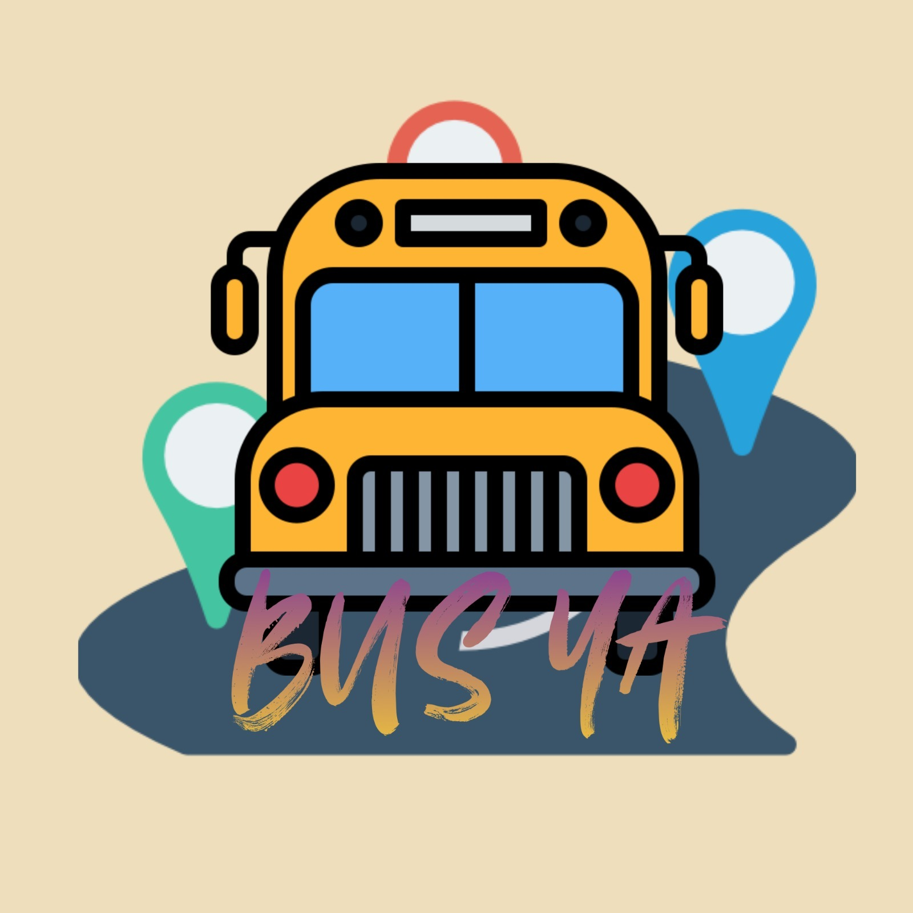
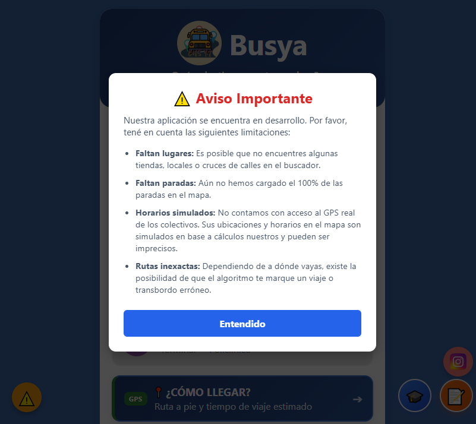
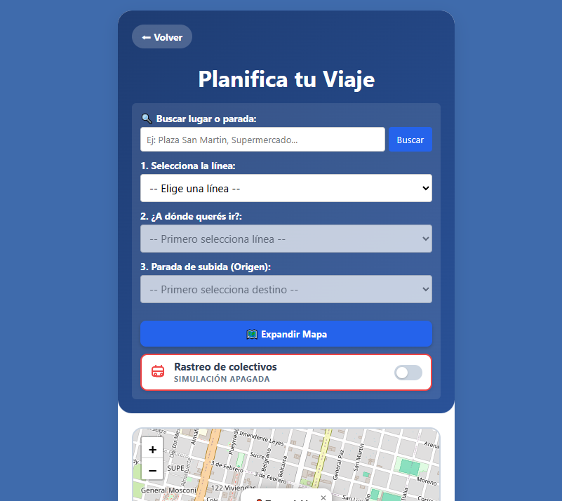
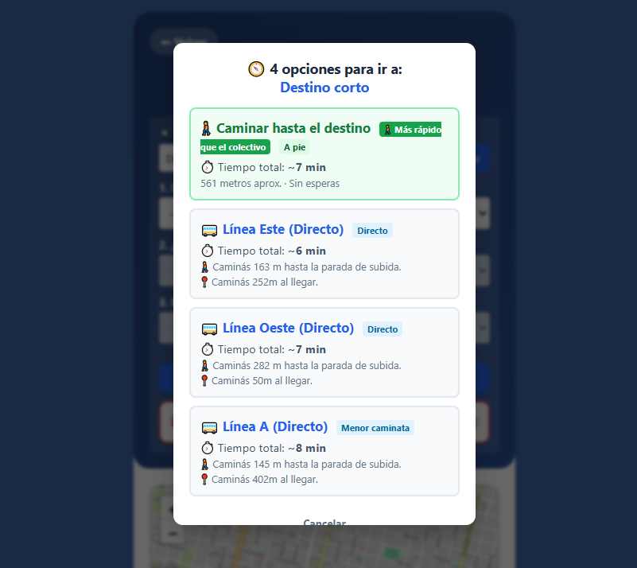

Busya
Transporte público de Villa Mercedes, San Luis
Planificá tu viaje en colectivo de forma simple, rápida y sin internet.
🗺️ Mapa interactivo
🧭 Mejor ruta
🚶 Ir caminando
📱 APK + PWA
Busya: tu compañero de viaje en Villa Mercedes.
🤔
El problema
Saber qué colectivo tomar, en qué parada subir y cuándo llega puede ser confuso, sobre todo si estás lejos del centro o sin conexión.
Busya resuelve eso con datos locales y sin depender de internet.
💡
La solución
Una app que combina líneas, paradas, recorridos y horarios con un planificador que calcula la mejor ruta, directa o con transbordo.
4 líneasA, E, Zona Este, Zona Oeste
325 paradasCon coordenadas reales
HorariosL-V, sábado, domingo y feriados
Todo funciona con los datos guardados en el dispositivo.
🧭
¿Cómo funciona?
1️⃣ Buscá tu destino · 2️⃣ Elegí una de las 4 mejores opciones · 3️⃣ Seguí las instrucciones en el mapa.
El planificador compara tiempo, caminata y transbordos para elegir la mejor.
Menú principal

Acceso rápido a Cómo llegar, líneas, paradas y panel.
Planificador de viajes

Buscá un lugar o parada y obtené las mejores rutas.
Opciones y "Ir caminando"

Si el destino está cerca, caminar es la opción principal. El colectivo queda como alternativa.
🚶
Reglas de la opción caminando
≤ 800 mPrioridad máxima (más rápido que esperar el bus)
800 m – 2 kmSolo si el colectivo no ahorra tiempo real
> 2 kmOculta, salvo en periferia si el destino está más cerca que la parada
Distancia real estimada ×1.25 · 12 min por km.
📡
Funciona sin internet
APK y PWA empaquetan líneas, paradas, recorridos, horarios y el mapa de Villa Mercedes (zoom 13–16).
APK AndroidInstalable, datos incluidos
PWA webOffline tras la primera visita
Búsqueda offline1893 locales + caché de direcciones
Ideal para zonas con mala conexión.
📍
Pensado para todos
Detecta si estás en zona urbana, periferia o muy alejada y sugiere las 3 paradas de acceso más cercanas.
Incluye pase estudiantil con estado por día y horarios de feriados.
Busya se adapta a tu ubicación.
¡Probalo!
Web: angel-ferri.github.io/detras_busya
APK: en el repositorio (carpeta apk/)
github.com/Angel-Ferri/detras_busya
Busya — tu compañero de viaje en Villa Mercedes. 🚌